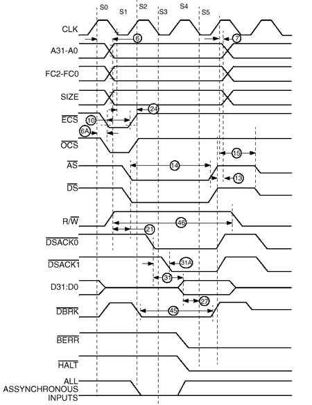
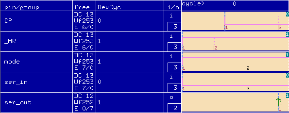

Device Cycles
If you look at a data sheet for a digital device, such as a microprocessor, you will see the various signals presented in the form of device cycles. An example of device cycles is shown in the figure below. It shows the read cycle on various pins of a commonly available microprocessor.

The time length of each test system cycle (and hence device cycle) is determined by the test system period setting. Thus if the period is for instance 60 ns, then each test system cycle is 60 ns long. See also Setting the period and Minimum period / maximum frequency of the sequencer.
The system stores device cycles in the device cycle table. For each pin there is one device cycle table. The table holds up to 16 device cycles.
As you generate new device cycles you use up system resources. The Timing Setup window informs you of the number of device cycles that are free for you to define. This number is displayed in the free column in the device cycle edit area under DC, refer to the figure below. Thus if the free column displays DC 10, you have defined six of the available 16 device cycles for a particular pin.
